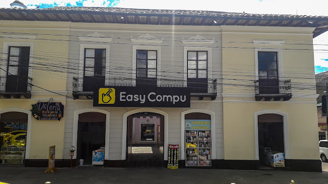

Experiencias Laborales
Nombre: Leydi Sánchez
Curso: 3ro de Bachillerato Técnico "A"
Mi Experiencia En Easy Compu

Para iniciar mi primera semana llegué a las 8:30 hora que me indicaron que seria mi ingreso
de Malchinguí tuve que salir en el bus de las 7:00 llegué a la empresa y
tuve que ponerme a las ordenes del gerente porque el técnico aun no llegaba
y en el transcurso de esperar que llegara, con el gerente y un trabajador armamos
un CPU e hisimos la revisión de discos y memorías ,a la llegada del técnico el gerente me
presento y me dijo que podia preguntarle cualquier cosa si lo necesitaba tambien dijo que
le podia tratar por su nombre el cual era Kevin ya llegaba la hora de mi salida que era a
las 4:30 de la tarde.
Iva a empezar la segunda semana y huvo un problema en el país el cual se retrasaron
las practicas y nos dijeron que deviamos empezar desde la proxima semana
A la semana que volvimos a ingresar se integraron pasantes de otras instituciones y
de intitutos ,me hize amiga de una chica llamada Cecilia nosotros eramos ayudantes del
técnico y también recibiamos oredenes de los demás trabajadores que se llamaban Santiago,
Ariana y Kimberli en esa semana practicamos el mantenimiento de laptops y logramos tratar
con errores de impresoras el técnico nos dijo que arreglemos la impresora y fue algo fácil
y divertido porque aprendimos algo nuevo.
En la tercera semana me cambie de local por ordenes del gerente ya que necesitaba ayuda
para un inventario de nueva mercaderia ya que era un local proximo abrir aqui conoci a una
chica super amable que se llamaba Pamela ,me explicaba cada paso para poder realizar el
inventario con codigos y nombres ,tuve que trabajar un sabádo acambio me darian un dia
libre cuando yo quisiera
En la ultima semana me dedique ayudar en el area de mantenimiento donde trabajaba con
los demas pasantes que se llamaban Dencel ,Alex y Cecilia estabamos a las ordenes cuando nos
necesitaban y un dia antes de regresar a la institucion me hisieron la visita y al proximo día
me despedi de mis compeños de trabajo